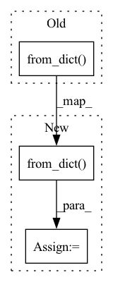

Pattern ID :4470
Before Change
"Reference data": f"{count_ref} ({count_ref / baseline_len * 100:0.2f}%)",
"Tested data": f"{count_test} ({count_test / test_len * 100:0.2f}%)"}
p_df = pd.DataFrame.from_dict( p_df, orient="index") if len(p_df) else None
if p_df is not None:
p_df = column_importance_sorter_df(p_df, dataset, feature_importances, self.n_top_columns)
After Change
"P value": p_val}
if len(p_dict):
sorted_p_df = pd.DataFrame.from_dict( p_dict, orient="index")
sorted_p_df = column_importance_sorter_df(sorted_p_df, dataset, feature_importances, self.n_top_columns)
else:
sorted_p_df = None
In pattern: SUPERPATTERN
Frequency: 8
Non-data size: 3
Instances Fragment ID: 16285320
Project Name: deepchecks/deepchecks
Commit Name: dc30a755e3aa8b7f3524eeb42b41f10049ba3546
Time: 2021-11-21
Author: jonatan.lib@gmail.com
File Name: deepchecks/checks/integrity/dominant_frequency_change.py
M Class Name: DominantFrequencyChange
N Class Name: DominantFrequencyChange
M Method Name: _dominant_frequency_change(4)
N Method Name: _dominant_frequency_change(4)
M Parent Class: CompareDatasetsBaseCheck
N Parent Class: CompareDatasetsBaseCheck
M File Name: deepchecks/checks/integrity/dominant_frequency_change.py
N File Name: deepchecks/checks/integrity/dominant_frequency_change.py
M Start Line: 114
M End Line: 143
N Start Line: 109
N End Line: 148
Before Change
def _columns_info(self, dataset: Dataset):
dataset = Dataset.validate_dataset_or_dataframe(dataset)
value = dataset.show_columns_info()
df = pd.DataFrame.from_dict( value, orient="index", columns=["role"]) .transpose()
return CheckResult(value, check=self.__class__, header="Columns Info", display=df)
After Change
dataset = Dataset.validate_dataset_or_dataframe(dataset)
value = dataset.show_columns_info()
value = column_importance_sorter_dict(value, dataset, feature_importances, self.n_top_columns)
df = pd.DataFrame.from_dict( value, orient="index", columns=["role"])
df = df.transpose()
return CheckResult(value, check=self.__class__, header="Columns Info", display=df)
Fragment ID: 16285337
Project Name: deepchecks/deepchecks
Commit Name: ee2fefe97d72d5dff894d9f0cd20cb5d15d442f5
Time: 2021-11-15
Author: jonatan.lib@gmail.com
File Name: mlchecks/checks/overview/columns_info.py
M Class Name: ColumnsInfo
N Class Name: ColumnsInfo
M Method Name: _columns_info(3)
N Method Name: _columns_info(2)
M Parent Class: SingleDatasetBaseCheck
N Parent Class: SingleDatasetBaseCheck
M File Name: mlchecks/checks/overview/columns_info.py
N File Name: mlchecks/checks/overview/columns_info.py
M Start Line: 27
M End Line: 28
N Start Line: 37
N End Line: 42
Before Change
// Accept either a list of strings or a map of strings to lists of strings.
if isinstance(d, (list, tuple)):
d = {"cpu": d, "gpu": d}
return super().from_dict( d, prevalidated)
class RegistryAuthConfigV0(schemas.SchemaBase):
_id = "http://determined.ai/schemas/expconf/v0/registry-auth.json"After Change
if "cuda" not in d and "gpu" in d:
d["cuda"] = d["gpu"]
del d["gpu"]
result = super().from_dict( d, prevalidated)
return result
class RegistryAuthConfigV0(schemas.SchemaBase): Fragment ID: 16285322
Project Name: determined-ai/determined
Commit Name: 1f4898c0e7b37e13c6a1414ff156c314c880a483
Time: 2021-12-21
Author: ilia@hpe.com
File Name: harness/determined/common/schemas/expconf/_v0.py
M Class Name: EnvironmentVariablesV0
N Class Name: EnvironmentVariablesV0
M Method Name: from_dict(3)
N Method Name: from_dict(3)
M Parent Class: schemas.SchemaBase
N Parent Class: schemas.SchemaBase
M File Name: harness/determined/common/schemas/expconf/_v0.py
N File Name: harness/determined/common/schemas/expconf/_v0.py
M Start Line: 274
M End Line: 275
N Start Line: 285
N End Line: 290
Before Change
@route
async def post(self, request: Request, data: dict) -> EventSourceResponse:
return EventSourceResponse(
add_event_listener(request, ListenPayload.from_dict( data) ),
ping=2,
)
After Change
self, request: Request, data: dict
) -> t.Union[t.Dict, EventSourceResponse]:
polling = data.pop("polling", False)
payload = ListenPayload.from_dict( data)
if polling:
return await dispatch_polling_event_listener(request, payload)
return EventSourceResponse( Fragment ID: 16285324
Project Name: voxel51/fiftyone
Commit Name: 88777033989dd7b3d7e8de39edd740aaa132f592
Time: 2022-05-12
Author: ben@voxel51.com
File Name: fiftyone/server/routes/events.py
M Class Name: Events
N Class Name: Events
M Method Name: post(3)
N Method Name: post(3)
M Parent Class: HTTPEndpoint
N Parent Class: HTTPEndpoint
M File Name: fiftyone/server/routes/events.py
N File Name: fiftyone/server/routes/events.py
M Start Line: 20
M End Line: 20
N Start Line: 27
N End Line: 33
Before Change
The GraphRepr object.
info = BaseRepr.load_src(src)
return GraphRepr.from_dict( info)
def to_yaml(self) -> str:
Export a YAML file describing this graph.
After Change
The GraphRepr object.
info = BaseRepr.load_src(src)
g_repr = GraphRepr.from_dict( info)
iso_df = g_repr.get_isolated_df()
iso_op = g_repr.get_isolated_op()
loop = g_repr.get_loop()
err_msg = ( Fragment ID: 16285332
Project Name: towhee-io/towhee
Commit Name: c1c145547850984ed2d56ae1a2179fe19b0093b0
Time: 2022-01-25
Author: kaiyuan.hu@zilliz.com
File Name: towhee/dag/graph_repr.py
M Class Name: GraphRepr
N Class Name: GraphRepr
M Method Name: from_yaml(1)
N Method Name: from_yaml(1)
M Parent Class: BaseRepr
N Parent Class: BaseRepr
M File Name: towhee/dag/graph_repr.py
N File Name: towhee/dag/graph_repr.py
M Start Line: 236
M End Line: 237
N Start Line: 233
N End Line: 247
Before Change
def dump(self):
self.save_calendars(self._new_calendar_list)
self._dump_features()
self.save_instruments(pd.DataFrame.from_dict( self._update_instruments, orient="index") )
if __name__ == "__main__":After Change
def dump(self):
self.save_calendars(self._new_calendar_list)
self._dump_features()
df = pd.DataFrame.from_dict( self._update_instruments, orient="index")
df.index.names = [self.symbol_field_name]
self.save_instruments(df.reset_index())
Fragment ID: 16285317
Project Name: microsoft/qlib
Commit Name: 1a1c45981c9b7cb177e747e1a76eb05f2f35bdbe
Time: 2021-01-26
Author: zhu.pengrong@foxmail.com
File Name: scripts/dump_bin.py
M Class Name: DumpDataUpdate
N Class Name: DumpDataUpdate
M Method Name: dump(1)
N Method Name: dump(1)
M Parent Class: DumpDataBase
N Parent Class: DumpDataBase
M File Name: scripts/dump_bin.py
N File Name: scripts/dump_bin.py
M Start Line: 484
M End Line: 484
N Start Line: 478
N End Line: 480
Before Change
assert str(doc[3].morph) == "Case=Nom|Number=Sing"
dev_examples = [
Example.from_dict(
nlp.make_doc("This is a test."), {"lemmas": ["this", "is", "a", "cat", "."]}
)
]
scores = nlp.evaluate(dev_examples)
// "cat" is the only correct lemma
assert scores["lemma_acc"] == pytest.approx(0.2)After Change
assert doc[3].lemma_ == "cat"
assert str(doc[3].morph) == "Case=Nom|Number=Sing"
doc = nlp.make_doc("This is a test.")
dev_examples = [Example.from_dict( doc, {"lemmas": ["this", "is", "a", "cat", "."]}) ]
scores = nlp.evaluate(dev_examples)
// "cat" is the only correct lemma
assert scores["lemma_acc"] == pytest.approx(0.2) Fragment ID: 16285318
Project Name: explosion/spaCy
Commit Name: 11347f34da5182d35559eae644231a432fb4d9c4
Time: 2020-10-04
Author: ines@ines.io
File Name: spacy/tests/pipeline/test_attributeruler.py
M Class Name: AnonimousClass
N Class Name: AnonimousClass
M Method Name: test_attributeruler_score(2)
N Method Name: test_attributeruler_score(2)
M Parent Class:
N Parent Class:
M File Name: spacy/tests/pipeline/test_attributeruler.py
N File Name: spacy/tests/pipeline/test_attributeruler.py
M Start Line: 106
M End Line: 117
N Start Line: 141
N End Line: 149
Before Change
_dt_map[self.INSTRUMENTS_START_FIELD] = self._format_datetime(_begin_time)
_dt_map[self.INSTRUMENTS_END_FIELD] = self._format_datetime(_end_time)
p_bar.update()
self.save_instruments(pd.DataFrame.from_dict( self._old_instruments, orient="index") )
logger.info("end of instruments dump.\n")
def dump(self):After Change
_dt_map[self.INSTRUMENTS_START_FIELD] = self._format_datetime(_begin_time)
_dt_map[self.INSTRUMENTS_END_FIELD] = self._format_datetime(_end_time)
p_bar.update()
_inst_df = pd.DataFrame.from_dict( self._old_instruments, orient="index")
_inst_df.index.names = [self.symbol_field_name]
self.save_instruments(_inst_df.reset_index())
logger.info("end of instruments dump.\n")
Fragment ID: 16285319
Project Name: microsoft/qlib
Commit Name: 25177b6dadbf35b9e5652f7ee13a32412149db2e
Time: 2020-11-25
Author: zhu.pengrong@foxmail.com
File Name: scripts/dump_bin.py
M Class Name: DumpDataFix
N Class Name: DumpDataFix
M Method Name: _dump_instruments(1)
N Method Name: _dump_instruments(1)
M Parent Class: DumpDataAll
N Parent Class: DumpDataAll
M File Name: scripts/dump_bin.py
N File Name: scripts/dump_bin.py
M Start Line: 336
M End Line: 336
N Start Line: 336
N End Line: 338